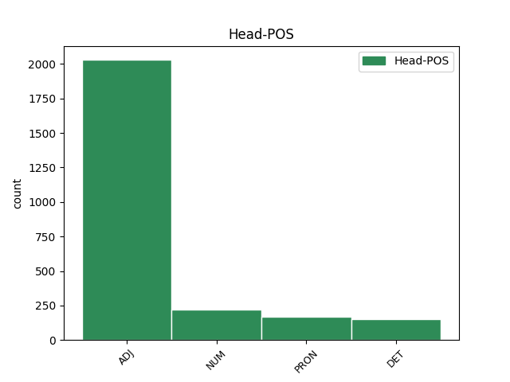

Distribution of features within this leaf

Agreement Rules sorted by frequency.
- When the dependent token is the modifer(mod) of the head token, and the head token is ADJ and the dependent token is ADJ.
1 Du _ _ _ _ 0 _ _ _
2 må _ _ _ _ 0 _ _ _
3 være _ _ _ _ 0 _ _ _
4 innstilt _ _ _ _ 0 _ _ _
5 på _ _ _ _ 0 _ _ _
6 at _ _ _ _ 0 _ _ _
7 du _ _ _ _ 0 _ _ _
8 kan _ _ _ _ 0 _ _ _
9 få _ _ _ _ 0 _ _ _
10 fire _ _ _ _ 0 _ _ _
11 årstider _ _ _ _ 0 _ _ _
12 på _ _ _ _ 0 _ _ _
13 en _ _ _ _ 0 _ _ _
14 dag _ _ _ _ 0 _ _ _
15 , _ _ _ _ 0 _ _ _
16 mye _ _ _ _ 0 _ _ _
17 tåke _ _ _ _ 0 _ _ _
18 , _ _ _ _ 0 _ _ _
19 vind _ _ _ _ 0 _ _ _
20 og _ _ _ _ 0 _ _ _
21 regn _ _ _ _ 0 _ _ _
22 , _ _ _ _ 0 _ _ _
23 men _ _ _ _ 0 _ _ _
24 det _ _ _ _ 0 _ _ _
25 blir _ _ _ _ 0 _ _ _
26 aldri _ _ _ _ 0 _ _ _
27 veldig veldig ADJ _ Definite=Ind|Degree=Pos|Gender=Neut|Number=Sing 28 mod _ _
28 kaldt kald ADJ _ Definite=Ind|Degree=Pos|Gender=Neut|Number=Sing 0 _ _ _
29 . _ _ _ _ 0 _ _ _
1 Her _ _ _ _ 0 _ _ _
2 gresser _ _ _ _ 0 _ _ _
3 fårene _ _ _ _ 0 _ _ _
4 i _ _ _ _ 0 _ _ _
5 det _ _ _ _ 0 _ _ _
6 frodige _ _ _ _ 0 _ _ _
7 landskapet _ _ _ _ 0 _ _ _
8 hvor _ _ _ _ 0 _ _ _
9 sjøsprøyten _ _ _ _ 0 _ _ _
10 står _ _ _ _ 0 _ _ _
11 , _ _ _ _ 0 _ _ _
12 slik _ _ _ _ 0 _ _ _
13 at _ _ _ _ 0 _ _ _
14 lammene _ _ _ _ 0 _ _ _
15 kommer _ _ _ _ 0 _ _ _
16 nærmest _ _ _ _ 0 _ _ _
17 ferdig _ _ _ _ 0 _ _ _
18 marinert marinere ADJ _ Definite=Ind|Gender=Neut|Number=Sing|VerbForm=Part 0 _ _ _
19 og _ _ _ _ 0 _ _ _
20 saltet salte ADJ _ Definite=Ind|Gender=Neut|Number=Sing|VerbForm=Part 18 conj _ _
21 til _ _ _ _ 0 _ _ _
22 slaktebenken _ _ _ _ 0 _ _ _
23 . _ _ _ _ 0 _ _ _
1 Alt _ _ _ _ 0 _ _ _
2 fra _ _ _ _ 0 _ _ _
3 klassisk _ _ _ _ 0 _ _ _
4 til _ _ _ _ 0 _ _ _
5 det det DET _ Gender=Neut|Number=Sing|PronType=Dem 6 det _ _
6 siste sist ADJ _ Definite=Def|Degree=Pos|Number=Sing 0 _ _ _
7 innen _ _ _ _ 0 _ _ _
8 rock _ _ _ _ 0 _ _ _
9 og _ _ _ _ 0 _ _ _
10 pop _ _ _ _ 0 _ _ _
11 . _ _ _ _ 0 _ _ _
1 Mats _ _ _ _ 0 _ _ _
2 Zuccarello _ _ _ _ 0 _ _ _
3 Aasen _ _ _ _ 0 _ _ _
4 åpnet _ _ _ _ 0 _ _ _
5 scoringsshowet _ _ _ _ 0 _ _ _
6 for _ _ _ _ 0 _ _ _
7 New _ _ _ _ 0 _ _ _
8 York _ _ _ _ 0 _ _ _
9 Rangers _ _ _ _ 0 _ _ _
10 da _ _ _ _ 0 _ _ _
11 laget _ _ _ _ 0 _ _ _
12 slo _ _ _ _ 0 _ _ _
13 Slovan _ _ _ _ 0 _ _ _
14 Bratislava _ _ _ _ 0 _ _ _
15 4 4 NUM _ Number=Plur|NumType=Card 0 _ _ _
16 - _ _ _ _ 0 _ _ _
17 1 1 NUM _ Number=Plur|NumType=Card 15 conj _ _
18 i _ _ _ _ 0 _ _ _
19 en _ _ _ _ 0 _ _ _
20 treningskamp _ _ _ _ 0 _ _ _
21 i _ _ _ _ 0 _ _ _
22 den _ _ _ _ 0 _ _ _
23 slovakiske _ _ _ _ 0 _ _ _
24 hovedstaden _ _ _ _ 0 _ _ _
25 søndag _ _ _ _ 0 _ _ _
26 . _ _ _ _ 0 _ _ _
1 De _ _ _ _ 0 _ _ _
2 andre _ _ _ _ 0 _ _ _
3 må _ _ _ _ 0 _ _ _
4 presses _ _ _ _ 0 _ _ _
5 ut _ _ _ _ 0 _ _ _
6 - _ _ _ _ 0 _ _ _
7 og _ _ _ _ 0 _ _ _
8 lokkes _ _ _ _ 0 _ _ _
9 over _ _ _ _ 0 _ _ _
10 til _ _ _ _ 0 _ _ _
11 noe noen DET _ Gender=Neut|Number=Sing|PronType=Ind 12 det _ _
12 annet annen DET _ Definite=Ind|Gender=Neut|Number=Sing|PronType=Dem 0 _ _ _
13 og _ _ _ _ 0 _ _ _
14 bedre _ _ _ _ 0 _ _ _
15 . _ _ _ _ 0 _ _ _
1 Vi vi PRON _ Animacy=Hum|Case=Nom|Number=Plur|Person=1|PronType=Prs 0 _ _ _
2 andre annen DET _ Number=Plur|PronType=Dem 1 det _ _
3 har _ _ _ _ 0 _ _ _
4 nok _ _ _ _ 0 _ _ _
5 mer _ _ _ _ 0 _ _ _
6 objektivt _ _ _ _ 0 _ _ _
7 syn _ _ _ _ 0 _ _ _
8 på _ _ _ _ 0 _ _ _
9 hans _ _ _ _ 0 _ _ _
10 prosjekt _ _ _ _ 0 _ _ _
11 og _ _ _ _ 0 _ _ _
12 hans _ _ _ _ 0 _ _ _
13 retorikk _ _ _ _ 0 _ _ _
14 , _ _ _ _ 0 _ _ _
15 sier _ _ _ _ 0 _ _ _
16 Raja _ _ _ _ 0 _ _ _
17 til _ _ _ _ 0 _ _ _
18 VG _ _ _ _ 0 _ _ _
19 Nett _ _ _ _ 0 _ _ _
20 . _ _ _ _ 0 _ _ _
1 Fra _ _ _ _ 0 _ _ _
2 og _ _ _ _ 0 _ _ _
3 med _ _ _ _ 0 _ _ _
4 1999 _ _ _ _ 0 _ _ _
5 ble _ _ _ _ 0 _ _ _
6 opsjonsskattereglene _ _ _ _ 0 _ _ _
7 lempet _ _ _ _ 0 _ _ _
8 , _ _ _ _ 0 _ _ _
9 slik _ _ _ _ 0 _ _ _
10 at _ _ _ _ 0 _ _ _
11 opsjoner _ _ _ _ 0 _ _ _
12 ved _ _ _ _ 0 _ _ _
13 beregnet _ _ _ _ 0 _ _ _
14 verdi _ _ _ _ 0 _ _ _
15 under _ _ _ _ 0 _ _ _
16 600 600 NUM _ Number=Plur|NumType=Card 17 compound _ _
17 000 000 NUM _ Number=Plur|NumType=Card 0 _ _ _
18 kr _ _ _ _ 0 _ _ _
19 ikke _ _ _ _ 0 _ _ _
20 ble _ _ _ _ 0 _ _ _
21 lønnsbeskattet _ _ _ _ 0 _ _ _
22 ved _ _ _ _ 0 _ _ _
23 erverv _ _ _ _ 0 _ _ _
24 , _ _ _ _ 0 _ _ _
25 forutsatt _ _ _ _ 0 _ _ _
26 visse _ _ _ _ 0 _ _ _
27 vilkår _ _ _ _ 0 _ _ _
28 som _ _ _ _ 0 _ _ _
29 måtte _ _ _ _ 0 _ _ _
30 oppfylles _ _ _ _ 0 _ _ _
31 . _ _ _ _ 0 _ _ _
1 - _ _ _ _ 0 _ _ _
2 Dersom _ _ _ _ 0 _ _ _
3 vi _ _ _ _ 0 _ _ _
4 hadde _ _ _ _ 0 _ _ _
5 hatt _ _ _ _ 0 _ _ _
6 de de DET _ Number=Plur|PronType=Dem 7 det _ _
7 to to NUM _ Number=Plur|NumType=Card 0 _ _ _
8 skadefrie _ _ _ _ 0 _ _ _
9 hele _ _ _ _ 0 _ _ _
10 sesongen _ _ _ _ 0 _ _ _
11 , _ _ _ _ 0 _ _ _
12 så _ _ _ _ 0 _ _ _
13 tror _ _ _ _ 0 _ _ _
14 jeg _ _ _ _ 0 _ _ _
15 vi _ _ _ _ 0 _ _ _
16 hadde _ _ _ _ 0 _ _ _
17 hatt _ _ _ _ 0 _ _ _
18 fem-seks _ _ _ _ 0 _ _ _
19 poeng _ _ _ _ 0 _ _ _
20 mer _ _ _ _ 0 _ _ _
21 enn _ _ _ _ 0 _ _ _
22 vi _ _ _ _ 0 _ _ _
23 har _ _ _ _ 0 _ _ _
24 nå _ _ _ _ 0 _ _ _
25 , _ _ _ _ 0 _ _ _
26 fortsatte _ _ _ _ 0 _ _ _
27 Fagermo _ _ _ _ 0 _ _ _
28 . _ _ _ _ 0 _ _ _
1 Vedtaket _ _ _ _ 0 _ _ _
2 om _ _ _ _ 0 _ _ _
3 å _ _ _ _ 0 _ _ _
4 gi _ _ _ _ 0 _ _ _
5 30.000 30.000 NUM _ Number=Plur|NumType=Card 7 mod _ _
6 offentlig _ _ _ _ 0 _ _ _
7 ansatte ansatt ADJ _ Degree=Pos|Number=Plur 0 _ _ _
8 ett _ _ _ _ 0 _ _ _
9 år _ _ _ _ 0 _ _ _
10 til _ _ _ _ 0 _ _ _
11 å _ _ _ _ 0 _ _ _
12 finne _ _ _ _ 0 _ _ _
13 en _ _ _ _ 0 _ _ _
14 annen _ _ _ _ 0 _ _ _
15 jobb _ _ _ _ 0 _ _ _
16 før _ _ _ _ 0 _ _ _
17 de _ _ _ _ 0 _ _ _
18 blir _ _ _ _ 0 _ _ _
19 sagt _ _ _ _ 0 _ _ _
20 opp _ _ _ _ 0 _ _ _
21 , _ _ _ _ 0 _ _ _
22 med _ _ _ _ 0 _ _ _
23 60 _ _ _ _ 0 _ _ _
24 prosent _ _ _ _ 0 _ _ _
25 av _ _ _ _ 0 _ _ _
26 lønna _ _ _ _ 0 _ _ _
27 i _ _ _ _ 0 _ _ _
28 mellomtiden _ _ _ _ 0 _ _ _
29 , _ _ _ _ 0 _ _ _
30 svir _ _ _ _ 0 _ _ _
31 for _ _ _ _ 0 _ _ _
32 dem _ _ _ _ 0 _ _ _
33 som _ _ _ _ 0 _ _ _
34 rammes _ _ _ _ 0 _ _ _
35 . _ _ _ _ 0 _ _ _
1 Jeg jeg PRON _ Animacy=Hum|Case=Nom|Number=Sing|Person=1|PronType=Prs 0 _ _ _
2 ønsker _ _ _ _ 0 _ _ _
3 rett _ _ _ _ 0 _ _ _
4 og _ _ _ _ 0 _ _ _
5 slett _ _ _ _ 0 _ _ _
6 å _ _ _ _ 0 _ _ _
7 stå _ _ _ _ 0 _ _ _
8 fritt fri ADJ _ Definite=Ind|Degree=Pos|Gender=Neut|Number=Sing 1 mod _ _
9 til _ _ _ _ 0 _ _ _
10 å _ _ _ _ 0 _ _ _
11 gjøre _ _ _ _ 0 _ _ _
12 med _ _ _ _ 0 _ _ _
13 livet _ _ _ _ 0 _ _ _
14 mitt _ _ _ _ 0 _ _ _
15 det _ _ _ _ 0 _ _ _
16 jeg _ _ _ _ 0 _ _ _
17 selv _ _ _ _ 0 _ _ _
18 ønsker _ _ _ _ 0 _ _ _
19 . _ _ _ _ 0 _ _ _
1 Utfordringen _ _ _ _ 0 _ _ _
2 er _ _ _ _ 0 _ _ _
3 å _ _ _ _ 0 _ _ _
4 skille _ _ _ _ 0 _ _ _
5 de _ _ _ _ 0 _ _ _
6 helt _ _ _ _ 0 _ _ _
7 overbeviste _ _ _ _ 0 _ _ _
8 fra _ _ _ _ 0 _ _ _
9 de _ _ _ _ 0 _ _ _
10 mange mange ADJ _ Degree=Pos|Number=Plur 11 mod _ _
11 andre annen DET _ Number=Plur|PronType=Dem 0 _ _ _
12 som _ _ _ _ 0 _ _ _
13 er _ _ _ _ 0 _ _ _
14 mer _ _ _ _ 0 _ _ _
15 i _ _ _ _ 0 _ _ _
16 drift _ _ _ _ 0 _ _ _
17 . _ _ _ _ 0 _ _ _
1 Hver hver DET _ Gender=Masc|Number=Sing|PronType=Tot 0 _ _ _
2 og _ _ _ _ 0 _ _ _
3 en en DET _ Gender=Masc|Number=Sing|PronType=Art 1 conj _ _
4 av _ _ _ _ 0 _ _ _
5 oss _ _ _ _ 0 _ _ _
6 skal _ _ _ _ 0 _ _ _
7 ha _ _ _ _ 0 _ _ _
8 mulighet _ _ _ _ 0 _ _ _
9 – _ _ _ _ 0 _ _ _
10 og _ _ _ _ 0 _ _ _
11 plikt _ _ _ _ 0 _ _ _
12 – _ _ _ _ 0 _ _ _
13 til _ _ _ _ 0 _ _ _
14 å _ _ _ _ 0 _ _ _
15 ta _ _ _ _ 0 _ _ _
16 vare _ _ _ _ 0 _ _ _
17 på _ _ _ _ 0 _ _ _
18 seg _ _ _ _ 0 _ _ _
19 og _ _ _ _ 0 _ _ _
20 sine _ _ _ _ 0 _ _ _
21 , _ _ _ _ 0 _ _ _
22 og _ _ _ _ 0 _ _ _
23 skal _ _ _ _ 0 _ _ _
24 vite _ _ _ _ 0 _ _ _
25 at _ _ _ _ 0 _ _ _
26 den _ _ _ _ 0 _ _ _
27 dagen _ _ _ _ 0 _ _ _
28 man _ _ _ _ 0 _ _ _
29 ikke _ _ _ _ 0 _ _ _
30 er _ _ _ _ 0 _ _ _
31 i _ _ _ _ 0 _ _ _
32 stand _ _ _ _ 0 _ _ _
33 til _ _ _ _ 0 _ _ _
34 det _ _ _ _ 0 _ _ _
35 , _ _ _ _ 0 _ _ _
36 vil _ _ _ _ 0 _ _ _
37 fellesskapet _ _ _ _ 0 _ _ _
38 stille _ _ _ _ 0 _ _ _
39 opp _ _ _ _ 0 _ _ _
40 . _ _ _ _ 0 _ _ _
1 Vi _ _ _ _ 0 _ _ _
2 bør _ _ _ _ 0 _ _ _
3 hindre _ _ _ _ 0 _ _ _
4 at _ _ _ _ 0 _ _ _
5 det _ _ _ _ 0 _ _ _
6 blir _ _ _ _ 0 _ _ _
7 motsetninger _ _ _ _ 0 _ _ _
8 mellom _ _ _ _ 0 _ _ _
9 det det PRON _ Gender=Neut|Number=Sing|Person=3|PronType=Prs 0 _ _ _
10 å _ _ _ _ 0 _ _ _
11 utvikle _ _ _ _ 0 _ _ _
12 de _ _ _ _ 0 _ _ _
13 nye _ _ _ _ 0 _ _ _
14 , _ _ _ _ 0 _ _ _
15 fornybare _ _ _ _ 0 _ _ _
16 kraftkilder _ _ _ _ 0 _ _ _
17 og _ _ _ _ 0 _ _ _
18 det det PRON _ Gender=Neut|Number=Sing|Person=3|PronType=Prs 9 conj _ _
19 å _ _ _ _ 0 _ _ _
20 få _ _ _ _ 0 _ _ _
21 fram _ _ _ _ 0 _ _ _
22 en _ _ _ _ 0 _ _ _
23 miljøvennlig _ _ _ _ 0 _ _ _
24 teknologi _ _ _ _ 0 _ _ _
25 knyttet _ _ _ _ 0 _ _ _
26 til _ _ _ _ 0 _ _ _
27 gasskraft _ _ _ _ 0 _ _ _
28 . _ _ _ _ 0 _ _ _
1 Senteret _ _ _ _ 0 _ _ _
2 er _ _ _ _ 0 _ _ _
3 ikke _ _ _ _ 0 _ _ _
4 bare _ _ _ _ 0 _ _ _
5 en _ _ _ _ 0 _ _ _
6 storstilt _ _ _ _ 0 _ _ _
7 investering _ _ _ _ 0 _ _ _
8 i _ _ _ _ 0 _ _ _
9 våre vår PRON _ Number=Plur|Poss=Yes|PronType=Prs 10 mod _ _
10 ansattes ansatt ADJ _ Case=Gen|Degree=Pos|Number=Plur 0 _ _ _
11 kompetanse _ _ _ _ 0 _ _ _
12 og _ _ _ _ 0 _ _ _
13 sikkerhet _ _ _ _ 0 _ _ _
14 , _ _ _ _ 0 _ _ _
15 men _ _ _ _ 0 _ _ _
16 også _ _ _ _ 0 _ _ _
17 et _ _ _ _ 0 _ _ _
18 bevis _ _ _ _ 0 _ _ _
19 på _ _ _ _ 0 _ _ _
20 den _ _ _ _ 0 _ _ _
21 kunnskapen _ _ _ _ 0 _ _ _
22 som _ _ _ _ 0 _ _ _
23 befinner _ _ _ _ 0 _ _ _
24 seg _ _ _ _ 0 _ _ _
25 i _ _ _ _ 0 _ _ _
26 den _ _ _ _ 0 _ _ _
27 maritime _ _ _ _ 0 _ _ _
28 klyngen _ _ _ _ 0 _ _ _
29 på _ _ _ _ 0 _ _ _
30 Nordvestlandet _ _ _ _ 0 _ _ _
31 , _ _ _ _ 0 _ _ _
32 sier _ _ _ _ 0 _ _ _
33 administrerende _ _ _ _ 0 _ _ _
34 direktør _ _ _ _ 0 _ _ _
35 i _ _ _ _ 0 _ _ _
36 Ålesund-rederiet _ _ _ _ 0 _ _ _
37 , _ _ _ _ 0 _ _ _
38 Karl-Johan _ _ _ _ 0 _ _ _
39 Bakken _ _ _ _ 0 _ _ _
40 . _ _ _ _ 0 _ _ _
1 Det _ _ _ _ 0 _ _ _
2 er _ _ _ _ 0 _ _ _
3 klart _ _ _ _ 0 _ _ _
4 at _ _ _ _ 0 _ _ _
5 skulle _ _ _ _ 0 _ _ _
6 noe _ _ _ _ 0 _ _ _
7 slikt slikt PRON _ Gender=Neut|Number=Sing|Person=3|PronType=Prs 0 _ _ _
8 , _ _ _ _ 0 _ _ _
9 altså _ _ _ _ 0 _ _ _
10 det det PRON _ Gender=Neut|Number=Sing|Person=3|PronType=Prs 7 appos _ _
11 som _ _ _ _ 0 _ _ _
12 går _ _ _ _ 0 _ _ _
13 på _ _ _ _ 0 _ _ _
14 direkte _ _ _ _ 0 _ _ _
15 feilinformasjon _ _ _ _ 0 _ _ _
16 , _ _ _ _ 0 _ _ _
17 komme _ _ _ _ 0 _ _ _
18 til _ _ _ _ 0 _ _ _
19 uttrykk _ _ _ _ 0 _ _ _
20 gjennom _ _ _ _ 0 _ _ _
21 et _ _ _ _ 0 _ _ _
22 flertallsvedtak _ _ _ _ 0 _ _ _
23 , _ _ _ _ 0 _ _ _
24 så _ _ _ _ 0 _ _ _
25 er _ _ _ _ 0 _ _ _
26 det _ _ _ _ 0 _ _ _
27 en _ _ _ _ 0 _ _ _
28 nokså _ _ _ _ 0 _ _ _
29 ikke _ _ _ _ 0 _ _ _
30 bare _ _ _ _ 0 _ _ _
31 alvorlig _ _ _ _ 0 _ _ _
32 , _ _ _ _ 0 _ _ _
33 men _ _ _ _ 0 _ _ _
34 opplagt _ _ _ _ 0 _ _ _
35 situasjon _ _ _ _ 0 _ _ _
36 og _ _ _ _ 0 _ _ _
37 utgang _ _ _ _ 0 _ _ _
38 på _ _ _ _ 0 _ _ _
39 det _ _ _ _ 0 _ _ _
40 . _ _ _ _ 0 _ _ _
1 I _ _ _ _ 0 _ _ _
2 ytterligere ytterligere ADJ _ Degree=Pos|Number=Plur 3 mod _ _
3 fire fire NUM _ Number=Plur|NumType=Card 0 _ _ _
4 politidistrikter _ _ _ _ 0 _ _ _
5 jobbes _ _ _ _ 0 _ _ _
6 det _ _ _ _ 0 _ _ _
7 fortsatt _ _ _ _ 0 _ _ _
8 med _ _ _ _ 0 _ _ _
9 saken _ _ _ _ 0 _ _ _
10 , _ _ _ _ 0 _ _ _
11 og _ _ _ _ 0 _ _ _
12 Nerdal _ _ _ _ 0 _ _ _
13 sier _ _ _ _ 0 _ _ _
14 politiet _ _ _ _ 0 _ _ _
15 vil _ _ _ _ 0 _ _ _
16 komme _ _ _ _ 0 _ _ _
17 tilbake _ _ _ _ 0 _ _ _
18 med _ _ _ _ 0 _ _ _
19 en _ _ _ _ 0 _ _ _
20 oppdatert _ _ _ _ 0 _ _ _
21 status _ _ _ _ 0 _ _ _
22 derfra _ _ _ _ 0 _ _ _
23 senere _ _ _ _ 0 _ _ _
24 . _ _ _ _ 0 _ _ _
1 Men _ _ _ _ 0 _ _ _
2 klubben _ _ _ _ 0 _ _ _
3 må _ _ _ _ 0 _ _ _
4 selvsagt _ _ _ _ 0 _ _ _
5 foreta _ _ _ _ 0 _ _ _
6 et _ _ _ _ 0 _ _ _
7 valg _ _ _ _ 0 _ _ _
8 om _ _ _ _ 0 _ _ _
9 de _ _ _ _ 0 _ _ _
10 ønsker _ _ _ _ 0 _ _ _
11 å _ _ _ _ 0 _ _ _
12 videreføre _ _ _ _ 0 _ _ _
13 den _ _ _ _ 0 _ _ _
14 spillestil _ _ _ _ 0 _ _ _
15 jeg _ _ _ _ 0 _ _ _
16 og _ _ _ _ 0 _ _ _
17 Bård _ _ _ _ 0 _ _ _
18 Wiggen _ _ _ _ 0 _ _ _
19 har _ _ _ _ 0 _ _ _
20 stått _ _ _ _ 0 _ _ _
21 for _ _ _ _ 0 _ _ _
22 , _ _ _ _ 0 _ _ _
23 eller _ _ _ _ 0 _ _ _
24 om _ _ _ _ 0 _ _ _
25 de _ _ _ _ 0 _ _ _
26 ønsker _ _ _ _ 0 _ _ _
27 å _ _ _ _ 0 _ _ _
28 innføre _ _ _ _ 0 _ _ _
29 en _ _ _ _ 0 _ _ _
30 spillestil _ _ _ _ 0 _ _ _
31 mer _ _ _ _ 0 _ _ _
32 lik lik ADJ _ Definite=Ind|Degree=Pos|Number=Sing 0 _ _ _
33 den den PRON _ Gender=Fem,Masc|Number=Sing|Person=3|PronType=Prs 32 comp:obj _ _
34 landslaget _ _ _ _ 0 _ _ _
35 har _ _ _ _ 0 _ _ _
36 . _ _ _ _ 0 _ _ _
1 Du _ _ _ _ 0 _ _ _
2 kan _ _ _ _ 0 _ _ _
3 enten _ _ _ _ 0 _ _ _
4 kjøre _ _ _ _ 0 _ _ _
5 ferdiglagde _ _ _ _ 0 _ _ _
6 programmer _ _ _ _ 0 _ _ _
7 , _ _ _ _ 0 _ _ _
8 eller _ _ _ _ 0 _ _ _
9 sette _ _ _ _ 0 _ _ _
10 sammen _ _ _ _ 0 _ _ _
11 dine din PRON _ Number=Plur|Poss=Yes|PronType=Prs 12 mod _ _
12 egne egen DET _ Number=Plur|PronType=Prs 0 _ _ _
13 . _ _ _ _ 0 _ _ _
1 Etter _ _ _ _ 0 _ _ _
2 en _ _ _ _ 0 _ _ _
3 rask _ _ _ _ 0 _ _ _
4 kombinasjon _ _ _ _ 0 _ _ _
5 mellom _ _ _ _ 0 _ _ _
6 Fredriksen _ _ _ _ 0 _ _ _
7 og _ _ _ _ 0 _ _ _
8 Nils _ _ _ _ 0 _ _ _
9 Ottar _ _ _ _ 0 _ _ _
10 Sandø _ _ _ _ 0 _ _ _
11 havnet _ _ _ _ 0 _ _ _
12 ballen _ _ _ _ 0 _ _ _
13 i _ _ _ _ 0 _ _ _
14 bena _ _ _ _ 0 _ _ _
15 på _ _ _ _ 0 _ _ _
16 Hartmann _ _ _ _ 0 _ _ _
17 , _ _ _ _ 0 _ _ _
18 som _ _ _ _ 0 _ _ _
19 var _ _ _ _ 0 _ _ _
20 noe noe PRON _ Gender=Neut|Number=Sing|Person=3|PronType=Ind,Prs 21 udep _ _
21 heldig heldig ADJ _ Definite=Ind|Degree=Pos|Number=Sing 0 _ _ _
22 da _ _ _ _ 0 _ _ _
23 han _ _ _ _ 0 _ _ _
24 gled _ _ _ _ 0 _ _ _
25 forbi _ _ _ _ 0 _ _ _
26 to _ _ _ _ 0 _ _ _
27 Stranda-forsvarere _ _ _ _ 0 _ _ _
28 . _ _ _ _ 0 _ _ _
1 Stedet _ _ _ _ 0 _ _ _
2 er _ _ _ _ 0 _ _ _
3 populært populær ADJ _ Definite=Ind|Degree=Pos|Gender=Neut|Number=Sing 0 _ _ _
4 som _ _ _ _ 0 _ _ _
5 turistmål _ _ _ _ 0 _ _ _
6 særlig _ _ _ _ 0 _ _ _
7 i _ _ _ _ 0 _ _ _
8 cruisesesongen _ _ _ _ 0 _ _ _
9 noe noe PRON _ Gender=Neut|Number=Sing|Person=3|PronType=Ind,Prs 3 appos _ _
10 som _ _ _ _ 0 _ _ _
11 kan _ _ _ _ 0 _ _ _
12 medføre _ _ _ _ 0 _ _ _
13 interessekonflikter _ _ _ _ 0 _ _ _
14 mellom _ _ _ _ 0 _ _ _
15 reiselivsvirksomheten _ _ _ _ 0 _ _ _
16 og _ _ _ _ 0 _ _ _
17 forskningens _ _ _ _ 0 _ _ _
18 behov _ _ _ _ 0 _ _ _
19 for _ _ _ _ 0 _ _ _
20 minst _ _ _ _ 0 _ _ _
21 mulig _ _ _ _ 0 _ _ _
22 påvirkning _ _ _ _ 0 _ _ _
23 av _ _ _ _ 0 _ _ _
24 miljøet _ _ _ _ 0 _ _ _
25 i _ _ _ _ 0 _ _ _
26 området _ _ _ _ 0 _ _ _
27 . _ _ _ _ 0 _ _ _
1 Så _ _ _ _ 0 _ _ _
2 dro _ _ _ _ 0 _ _ _
3 han _ _ _ _ 0 _ _ _
4 sammen _ _ _ _ 0 _ _ _
5 med _ _ _ _ 0 _ _ _
6 tre tre NUM _ Number=Plur|NumType=Card 7 mod _ _
7 andre annen DET _ Number=Plur|PronType=Dem 0 _ _ _
8 fra _ _ _ _ 0 _ _ _
9 Stortingets _ _ _ _ 0 _ _ _
10 energi- _ _ _ _ 0 _ _ _
11 og _ _ _ _ 0 _ _ _
12 miljøkomité _ _ _ _ 0 _ _ _
13 på _ _ _ _ 0 _ _ _
14 safari _ _ _ _ 0 _ _ _
15 . _ _ _ _ 0 _ _ _
1 Vi vi PRON _ Animacy=Hum|Case=Nom|Number=Plur|Person=1|PronType=Prs 0 _ _ _
2 visste _ _ _ _ 0 _ _ _
3 det _ _ _ _ 0 _ _ _
4 , _ _ _ _ 0 _ _ _
5 begge _ _ _ _ 0 _ _ _
6 to to NUM _ Number=Plur|NumType=Card 1 appos _ _
7 . _ _ _ _ 0 _ _ _
1 Det _ _ _ _ 0 _ _ _
2 har _ _ _ _ 0 _ _ _
3 jo _ _ _ _ 0 _ _ _
4 kommet _ _ _ _ 0 _ _ _
5 en _ _ _ _ 0 _ _ _
6 rekke _ _ _ _ 0 _ _ _
7 innspill _ _ _ _ 0 _ _ _
8 til _ _ _ _ 0 _ _ _
9 departementet _ _ _ _ 0 _ _ _
10 både _ _ _ _ 0 _ _ _
11 fra _ _ _ _ 0 _ _ _
12 økonomiske _ _ _ _ 0 _ _ _
13 , _ _ _ _ 0 _ _ _
14 juridiske juridisk ADJ _ Degree=Pos|Number=Plur 0 _ _ _
15 og _ _ _ _ 0 _ _ _
16 andre annen DET _ Number=Plur|PronType=Dem 14 conj _ _
17 rådgivere _ _ _ _ 0 _ _ _
18 under _ _ _ _ 0 _ _ _
19 forhandlingsprosessen _ _ _ _ 0 _ _ _
20 . _ _ _ _ 0 _ _ _
1 Over _ _ _ _ 0 _ _ _
2 20 20 NUM _ Number=Plur|NumType=Card 0 _ _ _
3 000 000 NUM _ Number=Plur|NumType=Card 2 flat@name _ _
4 i _ _ _ _ 0 _ _ _
5 måneden _ _ _ _ 0 _ _ _
6 etter _ _ _ _ 0 _ _ _
7 skatt _ _ _ _ 0 _ _ _
8 , _ _ _ _ 0 _ _ _
9 og _ _ _ _ 0 _ _ _
10 hus _ _ _ _ 0 _ _ _
11 der _ _ _ _ 0 _ _ _
12 de _ _ _ _ 0 _ _ _
13 andre _ _ _ _ 0 _ _ _
14 talentene _ _ _ _ 0 _ _ _
15 bodde _ _ _ _ 0 _ _ _
16 , _ _ _ _ 0 _ _ _
17 før _ _ _ _ 0 _ _ _
18 de _ _ _ _ 0 _ _ _
19 skaffet _ _ _ _ 0 _ _ _
20 egen _ _ _ _ 0 _ _ _
21 leilighet _ _ _ _ 0 _ _ _
22 . _ _ _ _ 0 _ _ _
1 Slikt slikt PRON _ Gender=Neut|Number=Sing|Person=3|PronType=Prs 0 _ _ _
2 som _ _ _ _ 0 _ _ _
3 kan _ _ _ _ 0 _ _ _
4 skje _ _ _ _ 0 _ _ _
5 , _ _ _ _ 0 _ _ _
6 men _ _ _ _ 0 _ _ _
7 maksimalt _ _ _ _ 0 _ _ _
8 uheldig uheldig ADJ _ Definite=Ind|Degree=Pos|Gender=Neut|Number=Sing 1 conj _ _
9 for _ _ _ _ 0 _ _ _
10 laget _ _ _ _ 0 _ _ _
11 . _ _ _ _ 0 _ _ _
1 MS _ _ _ _ 0 _ _ _
2 - _ _ _ _ 0 _ _ _
3 rammede ramme ADJ _ Number=Plur|VerbForm=Part 0 _ _ _
4 , _ _ _ _ 0 _ _ _
5 også _ _ _ _ 0 _ _ _
6 unge ung ADJ _ Degree=Pos|Number=Plur 3 appos _ _
7 , _ _ _ _ 0 _ _ _
8 hadde _ _ _ _ 0 _ _ _
9 helt _ _ _ _ 0 _ _ _
10 fram _ _ _ _ 0 _ _ _
11 til _ _ _ _ 0 _ _ _
12 da _ _ _ _ 0 _ _ _
13 vært _ _ _ _ 0 _ _ _
14 innlagt _ _ _ _ 0 _ _ _
15 på _ _ _ _ 0 _ _ _
16 eldreinstitusjoner _ _ _ _ 0 _ _ _
17 . _ _ _ _ 0 _ _ _
1 Vi vi PRON _ Animacy=Hum|Case=Nom|Number=Plur|Person=1|PronType=Prs 3 mod _ _
2 må _ _ _ _ 0 _ _ _
3 alle alle PRON _ Number=Plur|Person=3|PronType=Prs,Tot 0 _ _ _
4 stå _ _ _ _ 0 _ _ _
5 fram _ _ _ _ 0 _ _ _
6 og _ _ _ _ 0 _ _ _
7 bruke _ _ _ _ 0 _ _ _
8 ytringsfriheten _ _ _ _ 0 _ _ _
9 , _ _ _ _ 0 _ _ _
10 noe _ _ _ _ 0 _ _ _
11 mange _ _ _ _ 0 _ _ _
12 ansvarlige _ _ _ _ 0 _ _ _
13 stemmer _ _ _ _ 0 _ _ _
14 har _ _ _ _ 0 _ _ _
15 tatt _ _ _ _ 0 _ _ _
16 til _ _ _ _ 0 _ _ _
17 orde _ _ _ _ 0 _ _ _
18 for _ _ _ _ 0 _ _ _
19 etter _ _ _ _ 0 _ _ _
20 22. _ _ _ _ 0 _ _ _
21 juli _ _ _ _ 0 _ _ _
22 . _ _ _ _ 0 _ _ _
1 Vi vi PRON _ Animacy=Hum|Case=Nom|Number=Plur|Person=1|PronType=Prs 0 _ _ _
2 voksne voksen ADJ _ Degree=Pos|Number=Plur 1 appos _ _
3 var _ _ _ _ 0 _ _ _
4 dessuten _ _ _ _ 0 _ _ _
5 skjønt _ _ _ _ 0 _ _ _
6 enige _ _ _ _ 0 _ _ _
7 om _ _ _ _ 0 _ _ _
8 at _ _ _ _ 0 _ _ _
9 helgereferat _ _ _ _ 0 _ _ _
10 som _ _ _ _ 0 _ _ _
11 inkluderer _ _ _ _ 0 _ _ _
12 bursdagsselskap _ _ _ _ 0 _ _ _
13 for _ _ _ _ 0 _ _ _
14 venners _ _ _ _ 0 _ _ _
15 barn _ _ _ _ 0 _ _ _
16 , _ _ _ _ 0 _ _ _
17 er _ _ _ _ 0 _ _ _
18 godt _ _ _ _ 0 _ _ _
19 plassert _ _ _ _ 0 _ _ _
20 i _ _ _ _ 0 _ _ _
21 kategorien _ _ _ _ 0 _ _ _
22 " _ _ _ _ 0 _ _ _
23 voksen _ _ _ _ 0 _ _ _
24 og _ _ _ _ 0 _ _ _
25 etablert _ _ _ _ 0 _ _ _
26 " _ _ _ _ 0 _ _ _
27 ( _ _ _ _ 0 _ _ _
28 okei _ _ _ _ 0 _ _ _
29 okei _ _ _ _ 0 _ _ _
30 , _ _ _ _ 0 _ _ _
31 så _ _ _ _ 0 _ _ _
32 er _ _ _ _ 0 _ _ _
33 man _ _ _ _ 0 _ _ _
34 kanskje _ _ _ _ 0 _ _ _
35 uansett _ _ _ _ 0 _ _ _
36 voksen _ _ _ _ 0 _ _ _
37 når _ _ _ _ 0 _ _ _
38 man _ _ _ _ 0 _ _ _
39 er _ _ _ _ 0 _ _ _
40 37 _ _ _ _ 0 _ _ _
41 , _ _ _ _ 0 _ _ _
42 men _ _ _ _ 0 _ _ _
43 det _ _ _ _ 0 _ _ _
44 er _ _ _ _ 0 _ _ _
45 noe _ _ _ _ 0 _ _ _
46 med _ _ _ _ 0 _ _ _
47 å _ _ _ _ 0 _ _ _
48 plutselig _ _ _ _ 0 _ _ _
49 selv _ _ _ _ 0 _ _ _
50 befinne _ _ _ _ 0 _ _ _
51 seg _ _ _ _ 0 _ _ _
52 i _ _ _ _ 0 _ _ _
53 situasjoner _ _ _ _ 0 _ _ _
54 som _ _ _ _ 0 _ _ _
55 man _ _ _ _ 0 _ _ _
56 forbinder _ _ _ _ 0 _ _ _
57 med _ _ _ _ 0 _ _ _
58 sine _ _ _ _ 0 _ _ _
59 egne _ _ _ _ 0 _ _ _
60 foreldre _ _ _ _ 0 _ _ _
61 og _ _ _ _ 0 _ _ _
62 andre _ _ _ _ 0 _ _ _
63 hypervoksne _ _ _ _ 0 _ _ _
64 mennesker _ _ _ _ 0 _ _ _
65 ) _ _ _ _ 0 _ _ _
66 . _ _ _ _ 0 _ _ _
1 Men _ _ _ _ 0 _ _ _
2 jeg _ _ _ _ 0 _ _ _
3 ser _ _ _ _ 0 _ _ _
4 at _ _ _ _ 0 _ _ _
5 det _ _ _ _ 0 _ _ _
6 er _ _ _ _ 0 _ _ _
7 fullt _ _ _ _ 0 _ _ _
8 mulig _ _ _ _ 0 _ _ _
9 å _ _ _ _ 0 _ _ _
10 trekke _ _ _ _ 0 _ _ _
11 samme _ _ _ _ 0 _ _ _
12 konklusjon _ _ _ _ 0 _ _ _
13 som _ _ _ _ 0 _ _ _
14 Kjell _ _ _ _ 0 _ _ _
15 Aamot _ _ _ _ 0 _ _ _
16 , _ _ _ _ 0 _ _ _
17 og _ _ _ _ 0 _ _ _
18 det det PRON _ Gender=Neut|Number=Sing|Person=3|PronType=Prs 0 _ _ _
19 særlig særlig ADJ _ Definite=Ind|Degree=Pos|Gender=Neut|Number=Sing 18 orphan _ _
20 midt _ _ _ _ 0 _ _ _
21 i _ _ _ _ 0 _ _ _
22 en _ _ _ _ 0 _ _ _
23 finanskrise _ _ _ _ 0 _ _ _
24 . _ _ _ _ 0 _ _ _
1 I _ _ _ _ 0 _ _ _
2 denne _ _ _ _ 0 _ _ _
3 situasjonen _ _ _ _ 0 _ _ _
4 bør _ _ _ _ 0 _ _ _
5 man _ _ _ _ 0 _ _ _
6 være _ _ _ _ 0 _ _ _
7 forsiktig _ _ _ _ 0 _ _ _
8 med _ _ _ _ 0 _ _ _
9 å _ _ _ _ 0 _ _ _
10 kreve _ _ _ _ 0 _ _ _
11 påplussinger _ _ _ _ 0 _ _ _
12 til _ _ _ _ 0 _ _ _
13 det _ _ _ _ 0 _ _ _
14 ene ene NUM _ Definite=Def|Number=Sing|NumType=Card 0 _ _ _
15 og _ _ _ _ 0 _ _ _
16 det _ _ _ _ 0 _ _ _
17 andre andre ADJ _ Definite=Def|Degree=Pos|Number=Sing 14 conj _ _
18 gode _ _ _ _ 0 _ _ _
19 formål _ _ _ _ 0 _ _ _
20 . _ _ _ _ 0 _ _ _
1 De _ _ _ _ 0 _ _ _
2 begeistrer _ _ _ _ 0 _ _ _
3 mange _ _ _ _ 0 _ _ _
4 av _ _ _ _ 0 _ _ _
5 kritikerne _ _ _ _ 0 _ _ _
6 - _ _ _ _ 0 _ _ _
7 men _ _ _ _ 0 _ _ _
8 alle alle PRON _ Number=Plur|Person=3|PronType=Prs,Tot 10 det _ _
9 når _ _ _ _ 0 _ _ _
10 de de PRON _ Case=Nom|Number=Plur|Person=3|PronType=Prs 0 _ _ _
11 et _ _ _ _ 0 _ _ _
12 ualminnelig _ _ _ _ 0 _ _ _
13 begrenset _ _ _ _ 0 _ _ _
14 publikum _ _ _ _ 0 _ _ _
15 . _ _ _ _ 0 _ _ _
1 Da _ _ _ _ 0 _ _ _
2 Bush-administrasjonen _ _ _ _ 0 _ _ _
3 og _ _ _ _ 0 _ _ _
4 dens _ _ _ _ 0 _ _ _
5 allierte _ _ _ _ 0 _ _ _
6 hamret _ _ _ _ 0 _ _ _
7 løs _ _ _ _ 0 _ _ _
8 på _ _ _ _ 0 _ _ _
9 Kofi _ _ _ _ 0 _ _ _
10 Annan _ _ _ _ 0 _ _ _
11 og _ _ _ _ 0 _ _ _
12 hans _ _ _ _ 0 _ _ _
13 modige _ _ _ _ 0 _ _ _
14 linje _ _ _ _ 0 _ _ _
15 før _ _ _ _ 0 _ _ _
16 og _ _ _ _ 0 _ _ _
17 etter _ _ _ _ 0 _ _ _
18 Irak-invasjonen _ _ _ _ 0 _ _ _
19 , _ _ _ _ 0 _ _ _
20 var _ _ _ _ 0 _ _ _
21 de de PRON _ Case=Nom|Number=Plur|Person=3|PronType=Prs 22 det _ _
22 nordiske nordisk ADJ _ Degree=Pos|Number=Plur 0 _ _ _
23 igjen _ _ _ _ 0 _ _ _
24 lite _ _ _ _ 0 _ _ _
25 synlige _ _ _ _ 0 _ _ _
26 , _ _ _ _ 0 _ _ _
27 selv _ _ _ _ 0 _ _ _
28 om _ _ _ _ 0 _ _ _
29 angrepene _ _ _ _ 0 _ _ _
30 var _ _ _ _ 0 _ _ _
31 i _ _ _ _ 0 _ _ _
32 strid _ _ _ _ 0 _ _ _
33 med _ _ _ _ 0 _ _ _
34 våre _ _ _ _ 0 _ _ _
35 interesser _ _ _ _ 0 _ _ _
36 og _ _ _ _ 0 _ _ _
37 tradisjoner _ _ _ _ 0 _ _ _
38 . _ _ _ _ 0 _ _ _
1 Kanskje _ _ _ _ 0 _ _ _
2 ikke _ _ _ _ 0 _ _ _
3 så _ _ _ _ 0 _ _ _
4 rart _ _ _ _ 0 _ _ _
5 , _ _ _ _ 0 _ _ _
6 når _ _ _ _ 0 _ _ _
7 selv _ _ _ _ 0 _ _ _
8 vage _ _ _ _ 0 _ _ _
9 formuleringer _ _ _ _ 0 _ _ _
10 om _ _ _ _ 0 _ _ _
11 at _ _ _ _ 0 _ _ _
12 terskelen _ _ _ _ 0 _ _ _
13 for _ _ _ _ 0 _ _ _
14 å _ _ _ _ 0 _ _ _
15 legge _ _ _ _ 0 _ _ _
16 seg _ _ _ _ 0 _ _ _
17 syk _ _ _ _ 0 _ _ _
18 kanskje _ _ _ _ 0 _ _ _
19 er _ _ _ _ 0 _ _ _
20 noe noen DET _ Gender=Neut|Number=Sing|PronType=Ind 21 udep _ _
21 lav lav ADJ _ Definite=Ind|Degree=Pos|Number=Sing 0 _ _ _
22 her _ _ _ _ 0 _ _ _
23 til _ _ _ _ 0 _ _ _
24 lands _ _ _ _ 0 _ _ _
25 , _ _ _ _ 0 _ _ _
26 blir _ _ _ _ 0 _ _ _
27 tolket _ _ _ _ 0 _ _ _
28 som _ _ _ _ 0 _ _ _
29 om _ _ _ _ 0 _ _ _
30 man _ _ _ _ 0 _ _ _
31 kaller _ _ _ _ 0 _ _ _
32 samtlige _ _ _ _ 0 _ _ _
33 norske _ _ _ _ 0 _ _ _
34 arbeidstagere _ _ _ _ 0 _ _ _
35 for _ _ _ _ 0 _ _ _
36 snyltere _ _ _ _ 0 _ _ _
37 , _ _ _ _ 0 _ _ _
38 unnasluntrere _ _ _ _ 0 _ _ _
39 , _ _ _ _ 0 _ _ _
40 dovenpeiser _ _ _ _ 0 _ _ _
41 og _ _ _ _ 0 _ _ _
42 trygdebedragere _ _ _ _ 0 _ _ _
43 . _ _ _ _ 0 _ _ _
1 Den _ _ _ _ 0 _ _ _
2 er _ _ _ _ 0 _ _ _
3 værutsatt _ _ _ _ 0 _ _ _
4 og _ _ _ _ 0 _ _ _
5 disponeres _ _ _ _ 0 _ _ _
6 av _ _ _ _ 0 _ _ _
7 Forsvaret _ _ _ _ 0 _ _ _
8 som _ _ _ _ 0 _ _ _
9 trafikkerer _ _ _ _ 0 _ _ _
10 den _ _ _ _ 0 _ _ _
11 fra _ _ _ _ 0 _ _ _
12 Bodø _ _ _ _ 0 _ _ _
13 hver _ _ _ _ 0 _ _ _
14 annen annen DET _ Definite=Ind|Gender=Masc|Number=Sing|PronType=Dem 0 _ _ _
15 eller _ _ _ _ 0 _ _ _
16 tredje tredje ADJ _ Definite=Def|Degree=Pos|Number=Sing 14 conj _ _
17 måned _ _ _ _ 0 _ _ _
18 for _ _ _ _ 0 _ _ _
19 å _ _ _ _ 0 _ _ _
20 føre _ _ _ _ 0 _ _ _
21 frem _ _ _ _ 0 _ _ _
22 forsyninger _ _ _ _ 0 _ _ _
23 og _ _ _ _ 0 _ _ _
24 nytt _ _ _ _ 0 _ _ _
25 personell _ _ _ _ 0 _ _ _
26 . _ _ _ _ 0 _ _ _
1 Det _ _ _ _ 0 _ _ _
2 var _ _ _ _ 0 _ _ _
3 nok _ _ _ _ 0 _ _ _
4 en en PRON _ Animacy=Hum|Number=Sing|PronType=Art,Prs 0 _ _ _
5 og _ _ _ _ 0 _ _ _
6 annen annen DET _ Definite=Ind|Gender=Masc|Number=Sing|PronType=Dem 4 conj _ _
7 i _ _ _ _ 0 _ _ _
8 rødt _ _ _ _ 0 _ _ _
9 og _ _ _ _ 0 _ _ _
10 hvitt _ _ _ _ 0 _ _ _
11 som _ _ _ _ 0 _ _ _
12 mente _ _ _ _ 0 _ _ _
13 det _ _ _ _ 0 _ _ _
14 siste _ _ _ _ 0 _ _ _
15 . _ _ _ _ 0 _ _ _
1 Da _ _ _ _ 0 _ _ _
2 klokken _ _ _ _ 0 _ _ _
3 passerte _ _ _ _ 0 _ _ _
4 45 _ _ _ _ 0 _ _ _
5 minutter _ _ _ _ 0 _ _ _
6 hadde _ _ _ _ 0 _ _ _
7 lagene _ _ _ _ 0 _ _ _
8 kun _ _ _ _ 0 _ _ _
9 skapt _ _ _ _ 0 _ _ _
10 en en DET _ Gender=Masc|Number=Sing|PronType=Art 0 _ _ _
11 eneste _ _ _ _ 0 _ _ _
12 målsjanse _ _ _ _ 0 _ _ _
13 hver hver DET _ Gender=Masc|Number=Sing|PronType=Tot 10 udep _ _
14 . _ _ _ _ 0 _ _ _
1 Vi _ _ _ _ 0 _ _ _
2 lo _ _ _ _ 0 _ _ _
3 , _ _ _ _ 0 _ _ _
4 alle all DET _ Number=Plur|PronType=Tot 0 _ _ _
5 syv syv NUM _ Number=Plur|NumType=Card 4 udep _ _
6 , _ _ _ _ 0 _ _ _
7 nemlig _ _ _ _ 0 _ _ _
8 seks _ _ _ _ 0 _ _ _
9 latinartianere _ _ _ _ 0 _ _ _
10 fra _ _ _ _ 0 _ _ _
11 Grefsen _ _ _ _ 0 _ _ _
12 gymnas _ _ _ _ 0 _ _ _
13 anno _ _ _ _ 0 _ _ _
14 1978 _ _ _ _ 0 _ _ _
15 og _ _ _ _ 0 _ _ _
16 vår _ _ _ _ 0 _ _ _
17 latinlektor _ _ _ _ 0 _ _ _
18 til _ _ _ _ 0 _ _ _
19 denne _ _ _ _ 0 _ _ _
20 dag _ _ _ _ 0 _ _ _
21 , _ _ _ _ 0 _ _ _
22 Anne _ _ _ _ 0 _ _ _
23 Katrine _ _ _ _ 0 _ _ _
24 Frihagen _ _ _ _ 0 _ _ _
25 . _ _ _ _ 0 _ _ _
1 Alt alt PRON _ Gender=Neut|Number=Sing|Person=3|PronType=Prs 0 _ _ _
2 svært _ _ _ _ 0 _ _ _
3 betimelig betimelig ADJ _ Definite=Ind|Degree=Pos|Number=Sing 1 comp:pred _ _
4 . _ _ _ _ 0 _ _ _
1 En _ _ _ _ 0 _ _ _
2 dr. _ _ _ _ 0 _ _ _
3 grad _ _ _ _ 0 _ _ _
4 av _ _ _ _ 0 _ _ _
5 Nellejet _ _ _ _ 0 _ _ _
6 Zorgdrager _ _ _ _ 0 _ _ _
7 om _ _ _ _ 0 _ _ _
8 hendelsene _ _ _ _ 0 _ _ _
9 har _ _ _ _ 0 _ _ _
10 da _ _ _ _ 0 _ _ _
11 også _ _ _ _ 0 _ _ _
12 den _ _ _ _ 0 _ _ _
13 treffende _ _ _ _ 0 _ _ _
14 tittelen _ _ _ _ 0 _ _ _
15 , _ _ _ _ 0 _ _ _
16 De De PRON _ Case=Nom|Number=Plur|Person=3|PronType=Prs 0 _ _ _
17 rettferdiges rettferdig ADJ _ Case=Gen|Degree=Pos|Number=Plur 16 flat@name _ _
18 strid _ _ _ _ 0 _ _ _
19 ( _ _ _ _ 0 _ _ _
20 Vett _ _ _ _ 0 _ _ _
21 & _ _ _ _ 0 _ _ _
22 viten _ _ _ _ 0 _ _ _
23 1997 _ _ _ _ 0 _ _ _
24 ) _ _ _ _ 0 _ _ _
25 . _ _ _ _ 0 _ _ _
1 Maten _ _ _ _ 0 _ _ _
2 fra _ _ _ _ 0 _ _ _
3 Godt _ _ _ _ 0 _ _ _
4 levert _ _ _ _ 0 _ _ _
5 har _ _ _ _ 0 _ _ _
6 holdt _ _ _ _ 0 _ _ _
7 fint _ _ _ _ 0 _ _ _
8 for _ _ _ _ 0 _ _ _
9 alle _ _ _ _ 0 _ _ _
10 oss vi PRON _ Animacy=Hum|Case=Acc|Number=Plur|Person=1|PronType=Prs 0 _ _ _
11 seks seks NUM _ Number=Plur|NumType=Card 10 mod _ _
12 . _ _ _ _ 0 _ _ _
1 Han _ _ _ _ 0 _ _ _
2 har _ _ _ _ 0 _ _ _
3 lagt _ _ _ _ 0 _ _ _
4 ut _ _ _ _ 0 _ _ _
5 seks _ _ _ _ 0 _ _ _
6 bilder _ _ _ _ 0 _ _ _
7 , _ _ _ _ 0 _ _ _
8 inkludert inkludere ADJ _ Definite=Ind|Gender=Neut|Number=Sing|VerbForm=Part 0 _ _ _
9 et en DET _ Gender=Neut|Number=Sing|PronType=Art 8 comp:obj _ _
10 av _ _ _ _ 0 _ _ _
11 seg _ _ _ _ 0 _ _ _
12 selv _ _ _ _ 0 _ _ _
13 og _ _ _ _ 0 _ _ _
14 kronprinsesse _ _ _ _ 0 _ _ _
15 Mette _ _ _ _ 0 _ _ _
16 Marit _ _ _ _ 0 _ _ _
17 , _ _ _ _ 0 _ _ _
18 og _ _ _ _ 0 _ _ _
19 et _ _ _ _ 0 _ _ _
20 av _ _ _ _ 0 _ _ _
21 seg _ _ _ _ 0 _ _ _
22 selv _ _ _ _ 0 _ _ _
23 med _ _ _ _ 0 _ _ _
24 Bill _ _ _ _ 0 _ _ _
25 Clinton _ _ _ _ 0 _ _ _
26 . _ _ _ _ 0 _ _ _
1 I _ _ _ _ 0 _ _ _
2 tillegg _ _ _ _ 0 _ _ _
3 kommer _ _ _ _ 0 _ _ _
4 to _ _ _ _ 0 _ _ _
5 uavhengige uavhengig ADJ _ Degree=Pos|Number=Plur 0 _ _ _
6 som _ _ _ _ 0 _ _ _
7 er _ _ _ _ 0 _ _ _
8 ventet _ _ _ _ 0 _ _ _
9 å _ _ _ _ 0 _ _ _
10 steme _ _ _ _ 0 _ _ _
11 med _ _ _ _ 0 _ _ _
12 Demokratene _ _ _ _ 0 _ _ _
13 , _ _ _ _ 0 _ _ _
14 og _ _ _ _ 0 _ _ _
15 åtte åtte NUM _ Number=Plur|NumType=Card 5 conj _ _
16 som _ _ _ _ 0 _ _ _
17 ennå _ _ _ _ 0 _ _ _
18 ikke _ _ _ _ 0 _ _ _
19 er _ _ _ _ 0 _ _ _
20 sikre _ _ _ _ 0 _ _ _
21 . _ _ _ _ 0 _ _ _
1 De de PRON _ Case=Nom|Number=Plur|Person=3|PronType=Prs 0 _ _ _
2 er _ _ _ _ 0 _ _ _
3 voksne _ _ _ _ 0 _ _ _
4 nesten _ _ _ _ 0 _ _ _
5 alle all DET _ Number=Plur|PronType=Tot 1 appos _ _
6 sammen _ _ _ _ 0 _ _ _
7 . _ _ _ _ 0 _ _ _
1 Men _ _ _ _ 0 _ _ _
2 alt _ _ _ _ 0 _ _ _
3 det _ _ _ _ 0 _ _ _
4 andre annen DET _ Definite=Def|Number=Sing|PronType=Dem 13 mod _ _
5 , _ _ _ _ 0 _ _ _
6 som _ _ _ _ 0 _ _ _
7 har _ _ _ _ 0 _ _ _
8 med _ _ _ _ 0 _ _ _
9 bandet _ _ _ _ 0 _ _ _
10 å _ _ _ _ 0 _ _ _
11 gjøre _ _ _ _ 0 _ _ _
12 , _ _ _ _ 0 _ _ _
13 det det PRON _ Gender=Neut|Number=Sing|Person=3|PronType=Prs 0 _ _ _
14 er _ _ _ _ 0 _ _ _
15 ikke _ _ _ _ 0 _ _ _
16 noe _ _ _ _ 0 _ _ _
17 problem _ _ _ _ 0 _ _ _
18 . _ _ _ _ 0 _ _ _
1 - _ _ _ _ 0 _ _ _
2 Den _ _ _ _ 0 _ _ _
3 asiatiske _ _ _ _ 0 _ _ _
4 kulturen _ _ _ _ 0 _ _ _
5 er _ _ _ _ 0 _ _ _
6 så _ _ _ _ 0 _ _ _
7 ulik ulik ADJ _ Definite=Ind|Degree=Pos|Number=Sing 0 _ _ _
8 den _ _ _ _ 0 _ _ _
9 afrikanske afrikansk ADJ _ Definite=Def|Degree=Pos|Number=Sing 7 comp:obj _ _
10 , _ _ _ _ 0 _ _ _
11 at _ _ _ _ 0 _ _ _
12 dette _ _ _ _ 0 _ _ _
13 vil _ _ _ _ 0 _ _ _
14 bli _ _ _ _ 0 _ _ _
15 et _ _ _ _ 0 _ _ _
16 helt _ _ _ _ 0 _ _ _
17 annerledes _ _ _ _ 0 _ _ _
18 prosjekt _ _ _ _ 0 _ _ _
19 . _ _ _ _ 0 _ _ _
1 På _ _ _ _ 0 _ _ _
2 banen _ _ _ _ 0 _ _ _
3 åpnet _ _ _ _ 0 _ _ _
4 han _ _ _ _ 0 _ _ _
5 bra _ _ _ _ 0 _ _ _
6 , _ _ _ _ 0 _ _ _
7 i _ _ _ _ 0 _ _ _
8 en _ _ _ _ 0 _ _ _
9 testkamp _ _ _ _ 0 _ _ _
10 mot _ _ _ _ 0 _ _ _
11 A-laget _ _ _ _ 0 _ _ _
12 ga _ _ _ _ 0 _ _ _
13 han _ _ _ _ 0 _ _ _
14 en en PRON _ Animacy=Hum|Number=Sing|PronType=Art,Prs 15 subj _ _
15 målgivende målgivende ADJ _ Definite=Ind|Degree=Pos|Gender=Neut|Number=Sing 0 _ _ _
16 og _ _ _ _ 0 _ _ _
17 slo _ _ _ _ 0 _ _ _
18 tunnel _ _ _ _ 0 _ _ _
19 på _ _ _ _ 0 _ _ _
20 Marco _ _ _ _ 0 _ _ _
21 Materazzi _ _ _ _ 0 _ _ _
22 . _ _ _ _ 0 _ _ _
1 Det det DET _ Gender=Neut|Number=Sing|PronType=Dem 2 mod _ _
2 første første ADJ _ Definite=Def|Degree=Pos|Number=Sing 0 _ _ _
3 han _ _ _ _ 0 _ _ _
4 la _ _ _ _ 0 _ _ _
5 merke _ _ _ _ 0 _ _ _
6 til _ _ _ _ 0 _ _ _
7 var _ _ _ _ 0 _ _ _
8 gjerdene _ _ _ _ 0 _ _ _
9 og _ _ _ _ 0 _ _ _
10 videokameraene _ _ _ _ 0 _ _ _
11 . _ _ _ _ 0 _ _ _
1 * _ _ _ _ 0 _ _ _
2 Støtten _ _ _ _ 0 _ _ _
3 til _ _ _ _ 0 _ _ _
4 musikkfestivaler _ _ _ _ 0 _ _ _
5 har _ _ _ _ 0 _ _ _
6 økt _ _ _ _ 0 _ _ _
7 fra _ _ _ _ 0 _ _ _
8 35 _ _ _ _ 0 _ _ _
9 000 _ _ _ _ 0 _ _ _
10 kroner _ _ _ _ 0 _ _ _
11 i _ _ _ _ 0 _ _ _
12 2003 _ _ _ _ 0 _ _ _
13 til _ _ _ _ 0 _ _ _
14 over _ _ _ _ 0 _ _ _
15 2 2 NUM _ Number=Plur|NumType=Card 0 _ _ _
16 , _ _ _ _ 0 _ _ _
17 5 5 NUM _ Number=Plur|NumType=Card 15 udep _ _
18 millioner _ _ _ _ 0 _ _ _
19 i _ _ _ _ 0 _ _ _
20 2011 _ _ _ _ 0 _ _ _
21 . _ _ _ _ 0 _ _ _
1 Den den DET _ Gender=Fem|Number=Sing|PronType=Dem 0 _ _ _
2 norske norsk ADJ _ Definite=Def|Degree=Pos|Number=Sing 1 flat@name _ _
3 kirke _ _ _ _ 0 _ _ _
4 er _ _ _ _ 0 _ _ _
5 en _ _ _ _ 0 _ _ _
6 stor _ _ _ _ 0 _ _ _
7 og _ _ _ _ 0 _ _ _
8 sammensatt _ _ _ _ 0 _ _ _
9 organisasjon _ _ _ _ 0 _ _ _
10 . _ _ _ _ 0 _ _ _
1 Ulykkesbåten _ _ _ _ 0 _ _ _
2 tok _ _ _ _ 0 _ _ _
3 en _ _ _ _ 0 _ _ _
4 snarveg _ _ _ _ 0 _ _ _
5 ( _ _ _ _ 0 _ _ _
6 merket merke ADJ _ Definite=Ind|Number=Sing|VerbForm=Part 0 _ _ _
7 svart svart ADJ _ Definite=Ind|Degree=Pos|Number=Sing 6 comp:pred _ _
8 ) _ _ _ _ 0 _ _ _
9 i _ _ _ _ 0 _ _ _
10 forhold _ _ _ _ 0 _ _ _
11 til _ _ _ _ 0 _ _ _
12 den _ _ _ _ 0 _ _ _
13 merka _ _ _ _ 0 _ _ _
14 skipsleia _ _ _ _ 0 _ _ _
15 forbi _ _ _ _ 0 _ _ _
16 Lepsøyrevet _ _ _ _ 0 _ _ _
17 . _ _ _ _ 0 _ _ _
1 Så _ _ _ _ 0 _ _ _
2 langt _ _ _ _ 0 _ _ _
3 har _ _ _ _ 0 _ _ _
4 det _ _ _ _ 0 _ _ _
5 vært _ _ _ _ 0 _ _ _
6 fire _ _ _ _ 0 _ _ _
7 pågripelser _ _ _ _ 0 _ _ _
8 i _ _ _ _ 0 _ _ _
9 Nord-Trøndelag _ _ _ _ 0 _ _ _
10 politidistrikt _ _ _ _ 0 _ _ _
11 og _ _ _ _ 0 _ _ _
12 to _ _ _ _ 0 _ _ _
13 i _ _ _ _ 0 _ _ _
14 Midtre _ _ _ _ 0 _ _ _
15 Hålogaland _ _ _ _ 0 _ _ _
16 og _ _ _ _ 0 _ _ _
17 én én NUM _ Gender=Masc|Number=Sing|NumType=Card 0 _ _ _
18 hver hver DET _ Gender=Masc|Number=Sing|PronType=Tot 17 orphan _ _
19 i _ _ _ _ 0 _ _ _
20 politidistriktene _ _ _ _ 0 _ _ _
21 Helgeland _ _ _ _ 0 _ _ _
22 , _ _ _ _ 0 _ _ _
23 Sør-Trøndelag _ _ _ _ 0 _ _ _
24 , _ _ _ _ 0 _ _ _
25 Sunnmøre _ _ _ _ 0 _ _ _
26 , _ _ _ _ 0 _ _ _
27 Hordaland _ _ _ _ 0 _ _ _
28 , _ _ _ _ 0 _ _ _
29 Rogaland _ _ _ _ 0 _ _ _
30 , _ _ _ _ 0 _ _ _
31 Hedmark _ _ _ _ 0 _ _ _
32 , _ _ _ _ 0 _ _ _
33 Follo _ _ _ _ 0 _ _ _
34 og _ _ _ _ 0 _ _ _
35 Oslo _ _ _ _ 0 _ _ _
36 . _ _ _ _ 0 _ _ _
Disagree Examples:
1 Litt _ _ _ _ 0 _ _ _
2 forsinket forsinke ADJ _ Definite=Ind|Number=Sing|VerbForm=Part 0 _ _ _
3 , _ _ _ _ 0 _ _ _
4 klokken _ _ _ _ 0 _ _ _
5 20.25 20.25 NUM _ Number=Plur|NumType=Card 2 conj _ _
6 , _ _ _ _ 0 _ _ _
7 satte _ _ _ _ 0 _ _ _
8 bryllupsgjestene _ _ _ _ 0 _ _ _
9 seg _ _ _ _ 0 _ _ _
10 til _ _ _ _ 0 _ _ _
11 bords _ _ _ _ 0 _ _ _
12 for _ _ _ _ 0 _ _ _
13 å _ _ _ _ 0 _ _ _
14 nyte _ _ _ _ 0 _ _ _
15 gallamiddagen _ _ _ _ 0 _ _ _
16 på _ _ _ _ 0 _ _ _
17 Slottet _ _ _ _ 0 _ _ _
18 . _ _ _ _ 0 _ _ _
1 Om _ _ _ _ 0 _ _ _
2 et en DET _ Gender=Neut|Number=Sing|PronType=Art 0 _ _ _
3 år _ _ _ _ 0 _ _ _
4 eller _ _ _ _ 0 _ _ _
5 to to NUM _ Number=Plur|NumType=Card 2 conj _ _
6 vil _ _ _ _ 0 _ _ _
7 han _ _ _ _ 0 _ _ _
8 trolig _ _ _ _ 0 _ _ _
9 mene _ _ _ _ 0 _ _ _
10 at _ _ _ _ 0 _ _ _
11 tiden _ _ _ _ 0 _ _ _
12 er _ _ _ _ 0 _ _ _
13 inne _ _ _ _ 0 _ _ _
14 for _ _ _ _ 0 _ _ _
15 å _ _ _ _ 0 _ _ _
16 presse _ _ _ _ 0 _ _ _
17 frem _ _ _ _ 0 _ _ _
18 en _ _ _ _ 0 _ _ _
19 generell _ _ _ _ 0 _ _ _
20 avtale _ _ _ _ 0 _ _ _
21 mellom _ _ _ _ 0 _ _ _
22 de _ _ _ _ 0 _ _ _
23 fire _ _ _ _ 0 _ _ _
24 partier _ _ _ _ 0 _ _ _
25 . _ _ _ _ 0 _ _ _
1 Svarene _ _ _ _ 0 _ _ _
2 på _ _ _ _ 0 _ _ _
3 Fr.p.s _ _ _ _ 0 _ _ _
4 spørsmål _ _ _ _ 0 _ _ _
5 er _ _ _ _ 0 _ _ _
6 en _ _ _ _ 0 _ _ _
7 passende _ _ _ _ 0 _ _ _
8 blanding _ _ _ _ 0 _ _ _
9 av _ _ _ _ 0 _ _ _
10 imøtekommenhet _ _ _ _ 0 _ _ _
11 og _ _ _ _ 0 _ _ _
12 politisk _ _ _ _ 0 _ _ _
13 velvilje _ _ _ _ 0 _ _ _
14 , _ _ _ _ 0 _ _ _
15 markering _ _ _ _ 0 _ _ _
16 av _ _ _ _ 0 _ _ _
17 at _ _ _ _ 0 _ _ _
18 en _ _ _ _ 0 _ _ _
19 ny _ _ _ _ 0 _ _ _
20 regjering _ _ _ _ 0 _ _ _
21 trenger _ _ _ _ 0 _ _ _
22 tid _ _ _ _ 0 _ _ _
23 for _ _ _ _ 0 _ _ _
24 å _ _ _ _ 0 _ _ _
25 avgjøre _ _ _ _ 0 _ _ _
26 hvordan _ _ _ _ 0 _ _ _
27 den _ _ _ _ 0 _ _ _
28 skal _ _ _ _ 0 _ _ _
29 håndtere _ _ _ _ 0 _ _ _
30 politisk politisk ADJ _ Definite=Ind|Degree=Pos|Gender=Neut|Number=Sing 31 mod _ _
31 vanskelige vanskelig ADJ _ Degree=Pos|Number=Plur 0 _ _ _
32 og _ _ _ _ 0 _ _ _
33 økonomisk _ _ _ _ 0 _ _ _
34 kostbare _ _ _ _ 0 _ _ _
35 saker _ _ _ _ 0 _ _ _
36 og _ _ _ _ 0 _ _ _
37 noen _ _ _ _ 0 _ _ _
38 få _ _ _ _ 0 _ _ _
39 klare _ _ _ _ 0 _ _ _
40 avvisninger _ _ _ _ 0 _ _ _
41 av _ _ _ _ 0 _ _ _
42 Fr.p.s _ _ _ _ 0 _ _ _
43 ønsker _ _ _ _ 0 _ _ _
44 . _ _ _ _ 0 _ _ _
1 Svarene _ _ _ _ 0 _ _ _
2 på _ _ _ _ 0 _ _ _
3 Fr.p.s _ _ _ _ 0 _ _ _
4 spørsmål _ _ _ _ 0 _ _ _
5 er _ _ _ _ 0 _ _ _
6 en _ _ _ _ 0 _ _ _
7 passende _ _ _ _ 0 _ _ _
8 blanding _ _ _ _ 0 _ _ _
9 av _ _ _ _ 0 _ _ _
10 imøtekommenhet _ _ _ _ 0 _ _ _
11 og _ _ _ _ 0 _ _ _
12 politisk _ _ _ _ 0 _ _ _
13 velvilje _ _ _ _ 0 _ _ _
14 , _ _ _ _ 0 _ _ _
15 markering _ _ _ _ 0 _ _ _
16 av _ _ _ _ 0 _ _ _
17 at _ _ _ _ 0 _ _ _
18 en _ _ _ _ 0 _ _ _
19 ny _ _ _ _ 0 _ _ _
20 regjering _ _ _ _ 0 _ _ _
21 trenger _ _ _ _ 0 _ _ _
22 tid _ _ _ _ 0 _ _ _
23 for _ _ _ _ 0 _ _ _
24 å _ _ _ _ 0 _ _ _
25 avgjøre _ _ _ _ 0 _ _ _
26 hvordan _ _ _ _ 0 _ _ _
27 den _ _ _ _ 0 _ _ _
28 skal _ _ _ _ 0 _ _ _
29 håndtere _ _ _ _ 0 _ _ _
30 politisk _ _ _ _ 0 _ _ _
31 vanskelige _ _ _ _ 0 _ _ _
32 og _ _ _ _ 0 _ _ _
33 økonomisk økonomisk ADJ _ Definite=Ind|Degree=Pos|Gender=Neut|Number=Sing 34 mod _ _
34 kostbare kostbar ADJ _ Degree=Pos|Number=Plur 0 _ _ _
35 saker _ _ _ _ 0 _ _ _
36 og _ _ _ _ 0 _ _ _
37 noen _ _ _ _ 0 _ _ _
38 få _ _ _ _ 0 _ _ _
39 klare _ _ _ _ 0 _ _ _
40 avvisninger _ _ _ _ 0 _ _ _
41 av _ _ _ _ 0 _ _ _
42 Fr.p.s _ _ _ _ 0 _ _ _
43 ønsker _ _ _ _ 0 _ _ _
44 . _ _ _ _ 0 _ _ _
1 Særlig særlig ADJ _ Definite=Ind|Degree=Pos|Gender=Neut|Number=Sing 3 mod _ _
2 alle _ _ _ _ 0 _ _ _
3 dem de PRON _ Case=Acc|Number=Plur|Person=3|PronType=Prs 0 _ _ _
4 som _ _ _ _ 0 _ _ _
5 lider _ _ _ _ 0 _ _ _
6 fordi _ _ _ _ 0 _ _ _
7 de _ _ _ _ 0 _ _ _
8 er _ _ _ _ 0 _ _ _
9 fattige _ _ _ _ 0 _ _ _
10 . _ _ _ _ 0 _ _ _